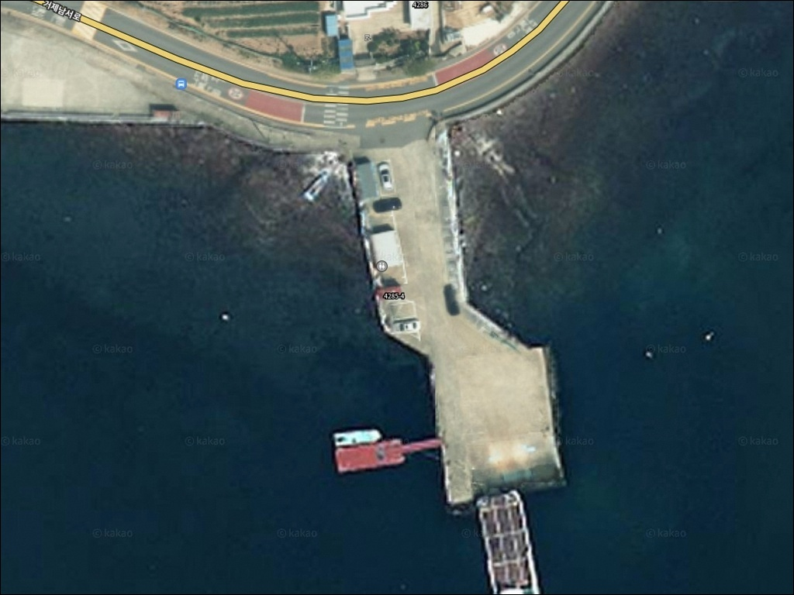
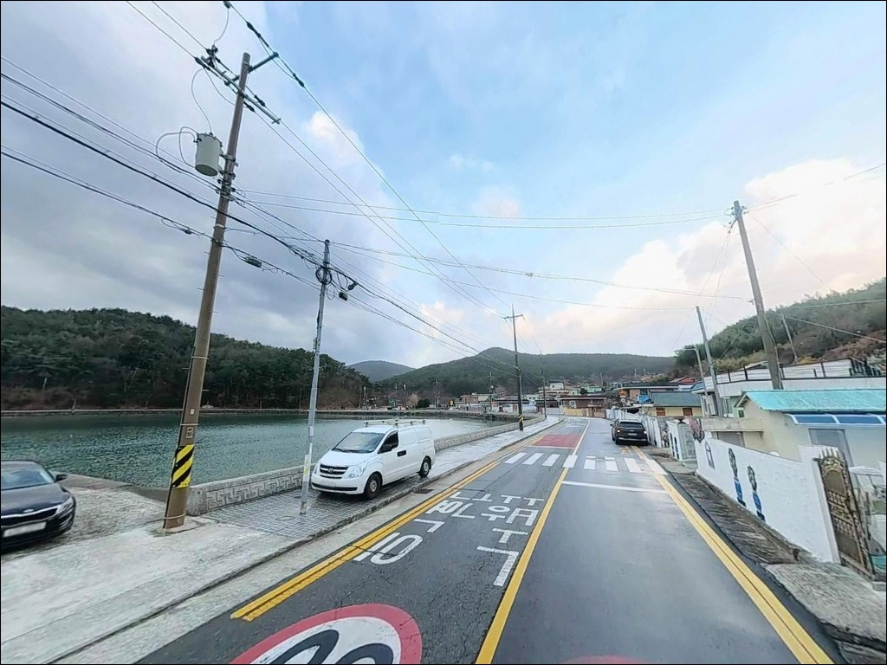
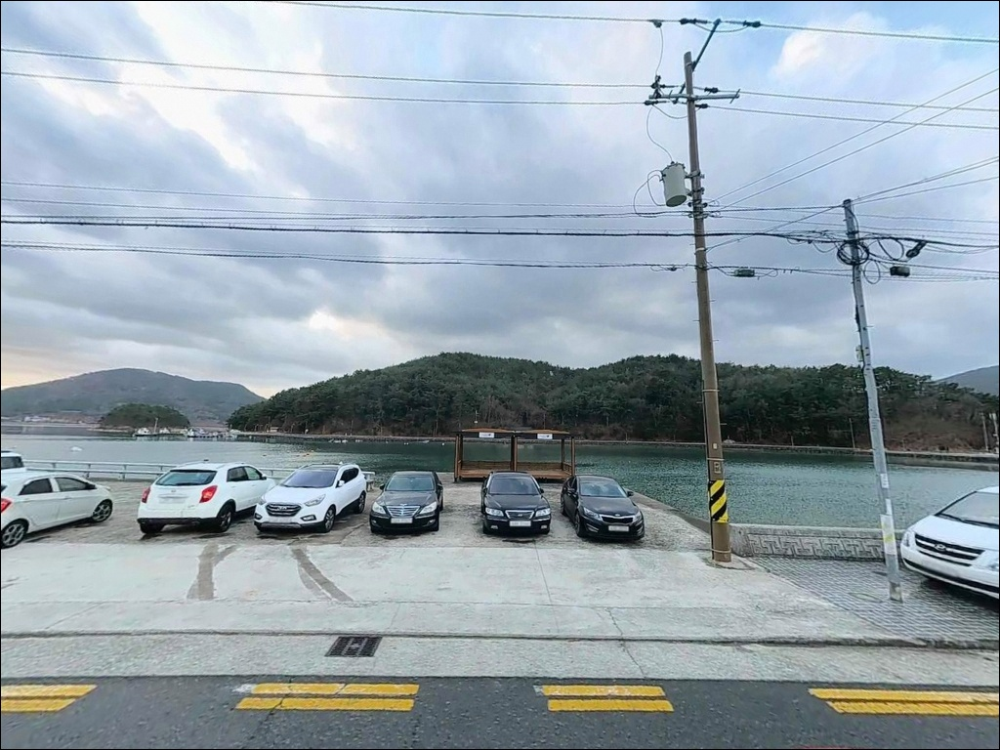
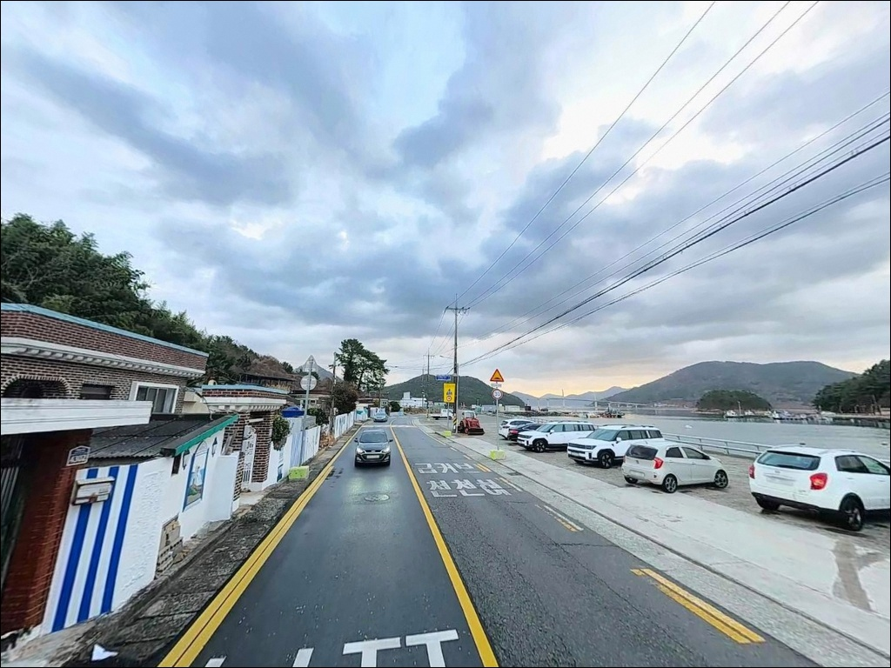
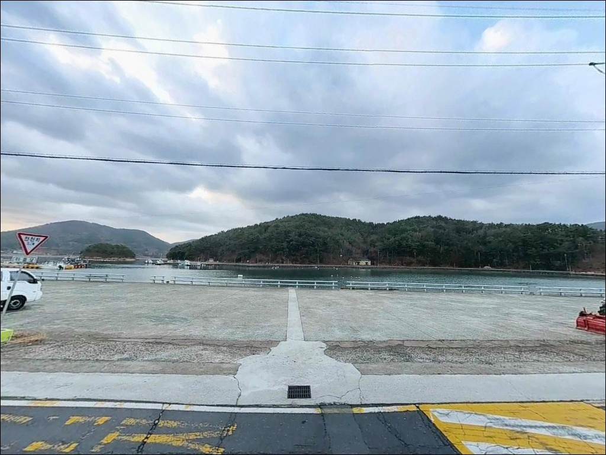
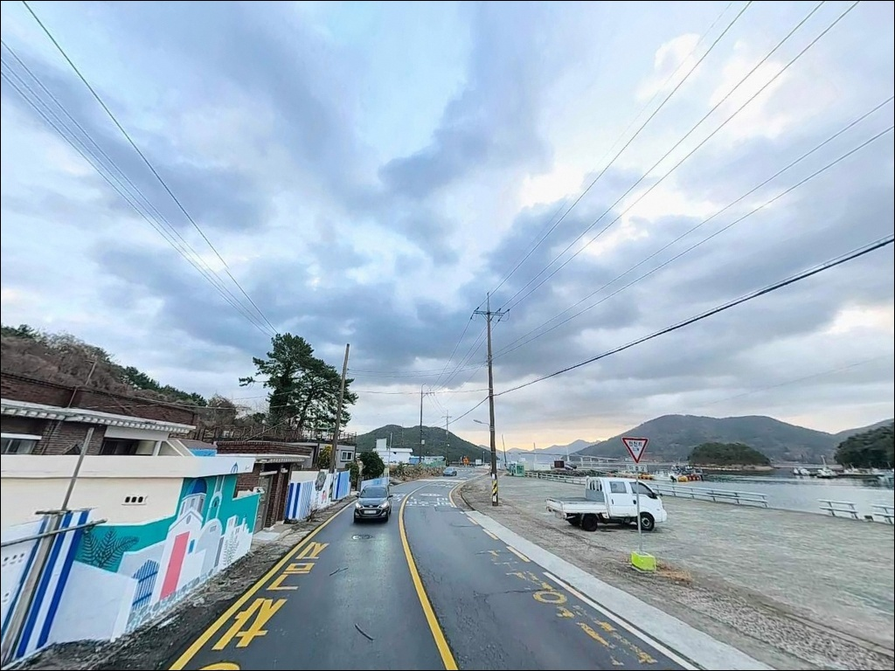
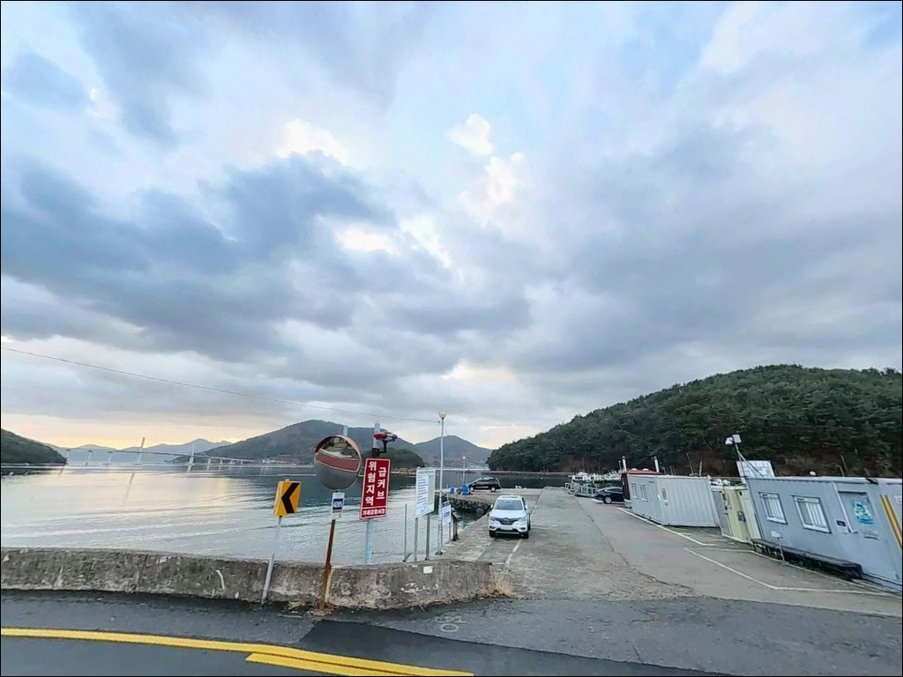
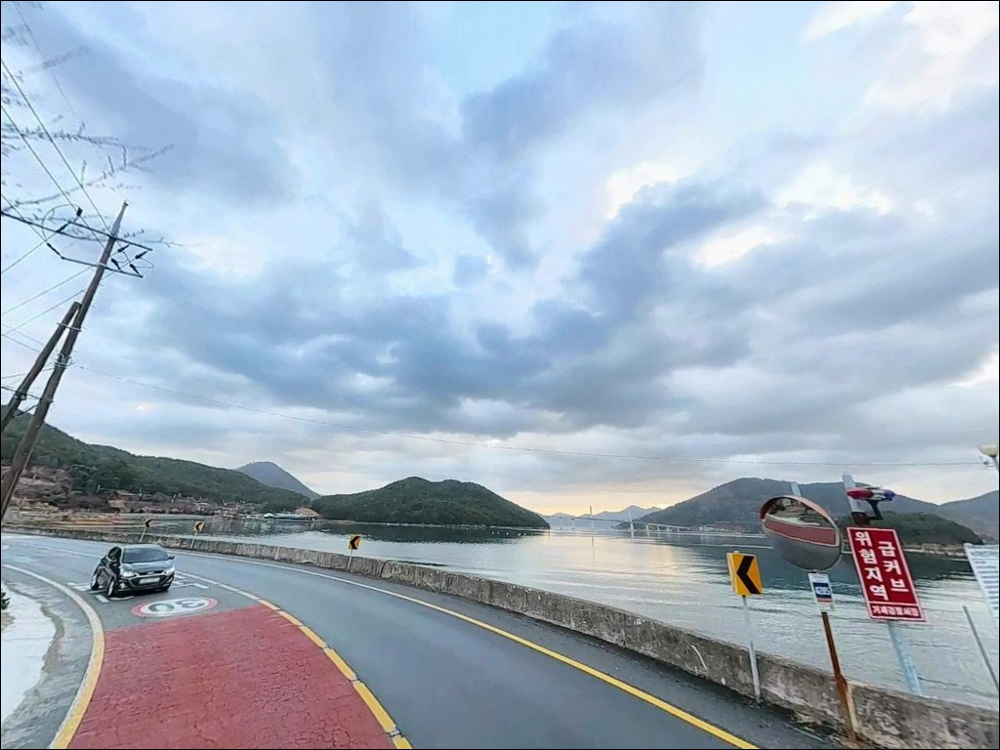
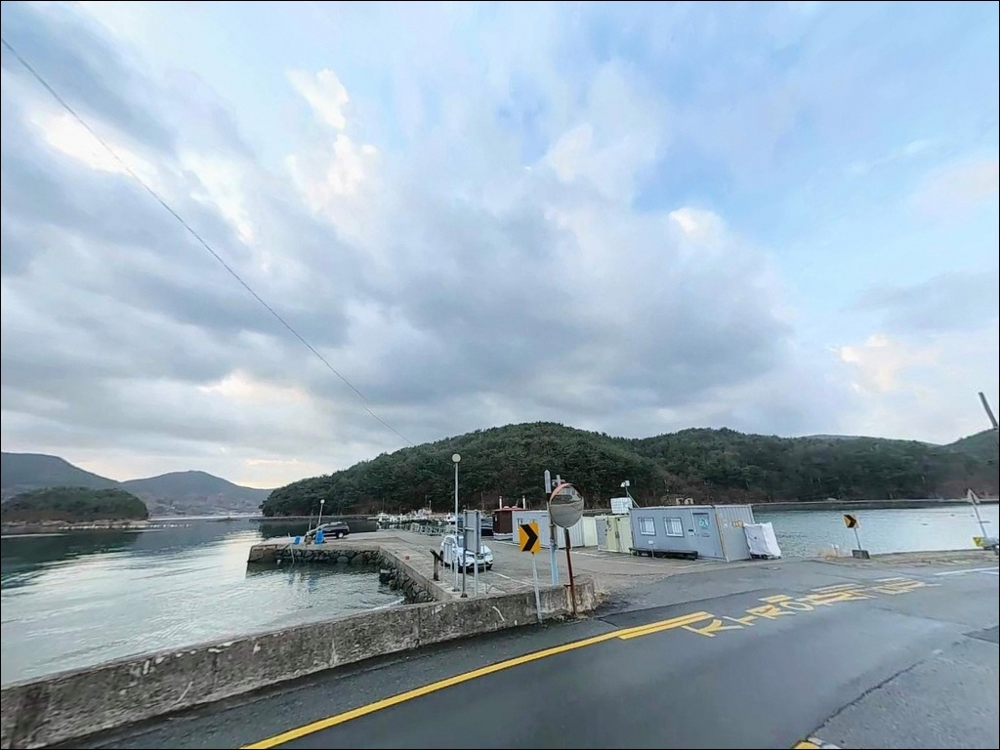

에깅 채비 안 통하던 고당선착장, 수심 2m 내만에서 살아난 찌낚시
이 페이지에는 광고(제휴 링크 포함)가 있으며, 광고 링크를 통해 구매하면 운영자가 판매 수익 또는 수수료를 받을 수 있습니다. 포인트 사진: 카카오맵 스카이뷰·로드뷰. 이 페이지의 지도·사진 이미지는 카카오맵의 실제 서비스 이미지와 다를 수 있습니다.


고당선착장
경남 거제시 거제면 법동리 603-3
고당선착장에서 에깅 채비를 먼저 꺼내는 것은
이 포인트에서 가장 자주 나오는 판단 착오입니다.
거제만 내만 가장 안쪽에 자리한 이 선착장은
수심이 얕고 조류가 완만해
무늬오징어 회유 빈도가 낮으며,
찌낚시와 라이트 루어 방식이 지형 조건에 맞습니다.
이 글은 고당선착장의 진입 환경,
내만 지형 기반 낚시 여건,
어울리는 낚시 스타일에 집중합니다.
특정 어종 조황이나 시설 운영 상태 단정은
이 글의 범위에 포함되지 않습니다.

1. 법동리 진입 동선과 주차 여건
법동리 진입은 거제남서로 방면에서
법동길을 따라 들어오는 방식이 기본입니다.
마을 내부 도로는 폭 4~5m 수준의
편도 1차로 농어촌 도로로,
비포장 구간 없이 선착장까지 이어집니다.
마을 골목 구간이 포함되어 있어
대형 차량이라면 진입 전 도로 폭을 미리 확인하는 것이 안전합니다.
선착장에 도착하면 고당항 주차장이 바로 연결됩니다.
일반 승용차와 중형 SUV 기준으로
주차와 회차가 가능한 구조이며,
캠핑카나 장축 차량은 물양장 회차 공간 제약으로
진입이 어렵습니다.
주차 후 선착장까지 이동 동선이 짧아
장비를 옮기는 데 불편은 적은 편입니다.
어촌 마을 특성상
물양장 진출입로를 막지 않는 위치에 주차하고,
어선 작업 동선과 겹치지 않는 자리를
먼저 파악하는 것이 기본 매너입니다.

2. 차박 환경과 야간 체류 여건
고당마을은 소규모 어촌 마을로
야간 차량 통행이 거의 없고,
민가 밀집도가 낮아
프라이버시는 양호한 편입니다.
거제만 내만이라 외해 파도 소음이 적고
조용한 수면 분위기가 유지됩니다.
낚시를 마치고 하룻밤 조용히 머무는 용도로는
나쁘지 않은 조건입니다.
선착장 자체 조명은 단일 등기구 수준이므로
야간 낚시 시 헤드랜턴은 필수입니다.
이른 새벽에는 어민 조업 활동이 시작될 수 있어
물양장 진출입로를 막지 않는 위치에 주차하는 것이 기본입니다.
차박을 계획한다면 하룻밤 자급 체제로 준비하고
어선 작업 시간대를 미리 염두에 두는 편이 좋습니다.


3. 주변 편의시설 및 인프라 현황
선착장 인근 법동리 626-6에
공중화장실이 위치합니다.
소규모 어촌 마을 특성상 관리 상태는
현장에서 확인이 필요하므로
미리 위치를 파악해두는 것이 좋습니다.
편의점이나 마트는
거제면 소재지 방향으로 3~4km 이동해야 닿습니다.
거제 고현 상권까지는 약 7~8km 거리로,
대형 마트와 24시 편의점, 약국이 집중되어 있습니다.
선착장 인근에서 즉각적인 보급은 어려우므로
출발 전 식수·얼음·낚시 소품을 완비하고
진입하는 것이 현실적인 준비 방식입니다.

4. 진입 전 반드시 챙겨야 할 준비사항
물때 확인이 첫 번째 순서입니다.
거제만 내만이라도
바다타임에서 법동리 기준 물때를 확인하고
출발 시각을 맞추는 것이 기본입니다.
조류가 완만한 포인트일수록
활성도 높은 시간대 선택이
조과를 결정하는 핵심이 됩니다.
기상 확인도 빠뜨릴 수 없습니다.
내만 구조라도 바람 방향에 따라
선착장 끝단에서의 낚시 여건이 달라집니다.
채비는 찌낚시용 크릴 밑밥과
라이트 루어 지그헤드를 함께 준비하는 방식이
이 포인트의 복수 공략을 가능하게 합니다.
어선 계류 및 작업 공간이 선착장에 포함되어 있으므로
어구나 계류 장비에 접촉하지 않는 자리를
먼저 파악하는 것이 기본 매너입니다.
출조 전에 거제면 법동리 일대 조황을
미리 검색해두면 방문 판단에 도움이 됩니다.

5. 거제만 내만 구조에서 달라지는 낚시 여건
고당선착장은 거제만 내만 깊숙한 위치에 자리하며,
고능도 자연 방벽이 앞을 막아
외해 파도 영향이 거의 미치지 않습니다.
수면이 잔잔하고 조류가 완만한 것이
이 포인트의 가장 두드러진 지형 특성입니다.
수심은 선착장 발판 앞이 2~4m 수준이며,
끝단으로 갈수록 5~6m 구간이 형성됩니다.
바닥은 갯벌과 자갈이 혼합된 지형이고,
선착장 전면에는
굴과 미역 양식 시설이 밀집되어 있어
원투 캐스팅 방향과 거리가 제한되는 구조입니다.
양식장 밀집 해역에서의 원투낚시는
캐스팅 방향과 거리가 제한되므로,
현장 도착 후 가능 각도부터 파악하는 것이
기본 순서입니다.
조류는 사리 때에도 완만한 수준을 유지하며,
찌낚시 채비가 안정적으로 자리를 잡기 유리한 반면
에깅 방식의 무늬오징어 회유 빈도는 낮습니다.
출조 전에 거제면 일대 최신 조황은
반드시 검색해보시기 바랍니다.


6. 내만 선착장에서 낚시 방식을 바꿔야 하는 이유
찌낚시가 이 선착장의 지형 조건과
가장 잘 맞는 낚시 방식입니다.
수심 2~4m에 완만한 조류 환경은
반유동 채비를 활용한 크릴 밑밥 찌낚시의
기본 조건을 충족합니다.
선착장 발판에서 내만 방향으로 중거리 이상 공략하면
감성돔 소형급과 볼락, 노래미 계열을
기대해볼 수 있습니다.
야간에는 라이트 루어 방식이 효율적입니다.
선착장 조명 경계를 활용한 야간 라이트 루어는
조류가 약한 내만 선착장에서
효과가 잘 나타나는 방식입니다.
단일 가로등 주변 명암 경계를
소형 지그헤드로 천천히 탐색하는 방식이
이 포인트 야간 공략의 기본이 됩니다.
원투낚시는 양식 시설 경계 밖으로
캐스팅 방향이 확보되는 자리에서만 운용합니다.
방향이 확보된다면
도다리·양태 계열을 기대할 수 있으며,
봉돌 무게는 조류가 완만한 만큼
무겁지 않은 채비로도 바닥 탐색이 가능합니다.

7. 대안 포인트와 플랜 B 동선
고당선착장 여건이 여의치 않을 때
가장 먼저 이동할 대안은
법동항 방파제입니다.
같은 법동리 해안선에서 약 1km 거리로,
선착장보다 발판이 넓고
조류 소통이 더 활발하게 형성됩니다.
동일한 내만 해역 조건에서
찌낚시와 라이트 루어를 그대로 운용할 수 있습니다.
법동리에서 남쪽으로 약 2km 이동하면
소랑리 선착장이 있습니다.
캐스팅 공간이 상대적으로 넓어
원투낚시 운용이 더 자유로운 편입니다.
거제만 서측 해안선의 소형 방파제들은
동일한 내만 해역 조건을 공유하므로
이동 동선을 미리 묶어두면
상황 변화에 유연하게 대응할 수 있습니다.
감성돔을 주 대상으로 한다면
약 8km 거리의 가조도선착장도
거제 서부 권역에서 검토할 만한 선택지입니다.
고당선착장보다 외해 조류 영향이 강해
감성돔 찌낚시 여건이 다른 편입니다.

내만 포인트에서 방식을 맞추면
고당선착장이 달라 보입니다
에깅이 맞지 않고 원투 방향이 제한되는 조건이지만,
그 안에서 찌낚시와 라이트 루어 방식을 골라 쓴다면
고당선착장은 조용히 낚싯대 하나 드리우기에
나쁘지 않은 포인트입니다.
혼잡한 거제 유명 방파제를 피하고 싶은 낚시꾼에게는
덜 알려진 이 선착장의 조용함이 오히려 장점이 됩니다.
차박 여건도 합격 수준입니다.
고당항 주차장이 선착장과 바로 연결되어 있고
인근에 공중화장실이 위치하여
당일 출조와 단순 차박 대기까지 운용이 가능합니다.
편의점은 거제면 소재지로 나가야 하므로
출발 전 보급을 미리 마치는 것이 기본 조건입니다.
내만 조건이라 파도 걱정 없이 낚시에만 집중하고 싶은 분,
야간 라이트 루어를 즐기는 분이라면
한 번 답사해둘 만한 포인트입니다.
낚시를 마치고 잔잔한 거제만 내만을 바라보며
조용히 하룻밤 차박으로 마무리하는 출조에
잘 맞는 곳입니다.